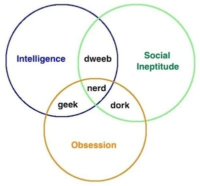

V. GIMNAZIJA
ŠTREBERI VS. KAMPANJCI
Prema provjerenim inormacijama u mnogim osnovnoškolskim i srednjoškolskim krugovima kruže priče da u V. gimnaziju idu samo „štreberi“.
Podsjetimo se prema točnoj definiciji značenja ove riječi koja se koristi kao naziv za ljude koji su preopterećeni učenjem do te mjere da zanemaruju svoj „socijalni život“.
Znanje koje oni steknu najčeše bude kratkotrajno te brzo sve to su naučili isto tako brzo i zaborave. Tu dolazimo do pitanja; Zašto je onda V. gimnazija škola sa jednim od najboljih rezultata na maturama?
Zar su zaista ti isti štreberi svo znanje koje su stekli u srednjoj školi iznova neiscrpno obnavljali, a tek onda po završetku mature zaboravili, a sada ti isti „štreberi“ pohađaju dobre fakultete poput FER-a, Medicine, Arhitekture, PMF-a, Mikrobiologije i slično? Mislim da nebismo baš mogli reći da je tomu tako...Ako se, naravno, vodimo točnom definicijom riječi „štreber“.
Naime te osobe su svoje znanje u razdoblju svog četverogodišnjeg školovanja u gimnaziji morale itekako stjecati tokom vremena da bi na kraju imale „pravo znanje“ za daljnje obrazovanje nakon polaganja mature, a znanje „od danas do sutra“.
S druge pak strane, budući da nije sve tako crno bijelo...ti isti ljudi koji su zaista pametni i uče s razumjevanjem dobivaju premalo pažnje za razliku od pravih štrebera s kojima bivaju stavljani u isti koš. Dapače obje skupine teže školskom savršenstvu i postignuću najviših rezultata. Takve osobe ne vode se time da „dobiju najviše što mogu“ već da dobiju najviše što se dobiti može, tamo vani. Bilo da je riječ o ocijeni, pohvali, diplomi, priznanju, nagradi ili čemu sličnome. Samo to čine na vidno drugačiji način. Upravo zbog ovakvih krivih teorija i predpostavki većina razgovora s ljudima koje tek upoznajem (kao ponosni učenik V.gimnazije) izgledaju ovako:
A osoba: Ma ja idem u Drugu ekonomsku, ti?
Ja: Ja idem u V. gimnaziju...
A osoba: OPAA! A ti si kao neka pametna, a? Ma štreberica...
Sve u svemu zaista je zanimljivo iskustvo biti dio ove skupine ljudi o koima su stvorene krive pretpostavke na temaju iskaljivanja osoba s očito nižim levelom inteligencije koji svoje komplekse liječe na drugima.
I za kraj naravno, kao i u svakoj školi, da napokon riješimo sve nedoumice znatiželjnih umova. Da, da i da, žao mi je to vam priznati, ali i u V.gimnaziji ima kampanjaca, ljudi koji dobivaju neopravdane, ljudi koji markiraju, ljudi koji varaju, ljudi koji prepisuju, i mnogih drugih prijestupnika za koje nebiste ni očekivali da su prešli bodovni prag koji ova kola zahtijeva, ali tako je.
